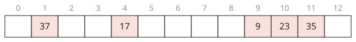
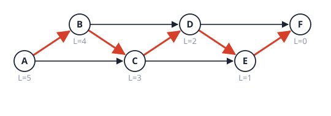

Mixed: questions that cross topics
Facts: pick the algorithm, state the cost
Sort 10^6 integers, each in \{0,\dots,999\}. Which sort, what cost, and why does it beat the comparison bound?
Answer
Counting sort, \Theta(n+k) with k=1000, so about 10^6 steps. The \Omega(n\log n) bound is for comparison sorts (decision tree with n! leaves). Counting sort never compares two keys; it uses each key as an array index.
Sort n numbers of d digits each in base b. Which sort, what cost, and what does it need from its inner sort?
Answer
Radix sort, \Theta(d(n+b)), least significant digit first. The inner sort must be stable (counting sort), otherwise the order from earlier digits is destroyed.
A file is split into 8 sorted parts, n numbers in total. Fastest way to produce one sorted file, with cost?
Answer
k-way merge with a heap of the k current heads: n extractions at O(\log k) each, O(n\log k)=O(3n). Concatenating and sorting costs \Theta(n\log n).
Fewest moves between two cells of a maze (all moves cost 1). Algorithm and cost?
Answer
BFS from the start, \Theta(|V|+|E|). The queue order is non-decreasing distance, so the first time a cell is discovered is its shortest distance. Dijkstra would also work but costs more.
Cheapest set of roads connecting all towns, positive costs. Algorithm and cost?
Answer
A minimum spanning tree: Prim with a heap or Kruskal, O(|E|\log|V|). It is not Dijkstra: shortest paths from one source and the cheapest connecting network are different objects.
Does a graph have a cycle (undirected)? How do you find out and what does it cost?
Answer
DFS: a non-tree edge to an already discovered vertex (not the parent) closes a cycle. \Theta(|V|+|E|). The edge count also tells you: a connected graph with |E|\ge|V| has a cycle. Kruskal detects the same thing with union-find.
Fewest coins for an amount with arbitrary denominations. Greedy or DP, and why?
Answer
DP. Greedy is correct only for special coin systems. Counter-example: coins \{1,3,4\}, amount 6: greedy takes 4+1+1 (3 coins), the optimum is 3+3 (2 coins). The DP is \Theta(n\cdot\text{amount}).
Find one short pattern in a very long text of ordinary letters, typically no match. Which algorithm is expected to be fastest?
Answer
Boyer-Moore: on mismatches with characters not in the pattern it jumps by m, so it often inspects about n/m characters. Rabin-Karp is O(n+m) expected but touches every character to roll the hash. Worst cases: simple scan and Boyer-Moore O(nm), Rabin-Karp O(nm) when many hash collisions.
One argument that decides P versus NP-complete for a graph problem you have never seen: what do you check first?
Answer
First, is it in NP: is there a polynomial-time check of a YES certificate (a path, a tour, a vertex set)? Then, does it look like a known NP-complete problem (Hamiltonian cycle, clique, vertex cover, subset sum) that reduces to it? If a polynomial algorithm is known, it is in P (shortest path, MST, sorting, matching a pattern).
Which of these has a polynomial algorithm: shortest path, longest simple path, MST, TSP tour of cost at most k, Hamiltonian path?
Answer
Shortest path (Dijkstra) and MST (Prim, Kruskal) are in P. Longest simple path, TSP and Hamiltonian path are NP-complete. Their YES answers are easy to check but nobody knows a polynomial way to find them.
Past-year questions
Questions from past papers (SC2001/CZ2101/CE2001). Every answer was worked out and checked by code; where a circulated official solution exists it was compared, and disagreements are flagged.
AY20/21 S2 1(b) (Not in your course: hash tables are not in the lecture slides; this paper is from the predecessor course CE2001/CZ2001, so it is worked here only for completeness.) A hash table has a size of 13. A key value k is mapped by open addressing as follows: a hashing function j=\text{hash}(k)=k\bmod13; a double hashing increment d=\text{hashIncr}(k)=k\bmod7+1; a double hashing function \text{rehash}(j,d)=(j+d)\bmod13. Draw the hash table to show how the sequence of data records with key values 9, 23, 35, 17 and 37 are stored in the hash table (starting with an empty table). Write the total number of hashing and rehashing done when each of these records is inserted into the hash table.
Answer
Insert each key at slot j=\text{hash}(k); if it is occupied, compute d once and probe j\leftarrow(j+d)\bmod13 until a free slot is found.
| key | hash j | occupied? | d=k\bmod7+1 | probes (rehash) | slot used | hashings | rehashings |
|---|---|---|---|---|---|---|---|
| 9 | 9 | no | 9 | 1 | 0 | ||
| 23 | 10 | no | 10 | 1 | 0 | ||
| 35 | 9 | yes (9) | 1 | (9+1)=10 occupied (23), (10+1)=11 free | 11 | 1 | 2 |
| 17 | 4 | no | 4 | 1 | 0 | ||
| 37 | 11 | yes (35) | 3 | (11+3)\bmod13=1 free | 1 | 1 | 1 |
Final table (slot: key): 1: 37, 4: 17, 9: 9, 10: 23, 11: 35; the other slots are empty.

Total: 5 hashings and 3 rehashings (8 probes).
Link. The increment d=k\bmod7+1 depends on the key, so keys that collide at one slot probe different sequences (35 steps by 1, 37 by 3). That is why double hashing avoids the clusters of plain linear probing. The increment must be coprime with the table size (13 is prime) so that the sequence visits every slot.
AY19/20 S1 1(b) Consider an n\times n matrix, where every row and every column are sorted in increasing order. An example is given in Figure Q1. (i) Design a search algorithm for the matrix by using the binary search learnt in lectures. Write down the pseudo code. (ii) Show the steps of searching key 15 by using the algorithm in Q1(b)(i) on the matrix in Figure Q1. (iii) Find the best-case, worst-case and average-case time complexity in Big-O notation in terms of n for the algorithm in Q1(b)(i). Briefly explain when the best case and the worst case happen.

Answer
(i) Binary search on every row. Each row is a sorted array, so search it with binary search, one row after another, resetting the search range for every row:
for i = 0 to n-1:
first = 0; last = n-1
while first <= last:
mid = (first + last) / 2
if M[i][mid] == key: return found // 1 comparison per probe
else if M[i][mid] < key: first = mid + 1
else: last = mid - 1
return not found(The circulated solution forgets to reset first and
last inside the row loop, so its code would skip every row
after the first. Its written trace does reset them, as above.)
(ii) Searching 15 in M=\begin{pmatrix}1&4&6&11\\2&5&8&14\\3&7&12&15\\9&10&13&16\end{pmatrix}
(n=4, first=0,
last=3 at the start of each row):
| row | probe 1 | probe 2 | probe 3 | result |
|---|---|---|---|---|
| 0 | mid 1: 4 < 15, first = 2 | mid 2: 6 < 15, first = 3 | mid 3: 11 < 15, first = 4 | range empty, next row |
| 1 | mid 1: 5 < 15, first = 2 | mid 2: 8 < 15, first = 3 | mid 3: 14 < 15, first = 4 | range empty, next row |
| 2 | mid 1: 7 < 15, first = 2 | mid 2: 12 < 15, first = 3 | mid 3: 15 = 15 | found at row 2, column 3 |
9 comparisons in total (3 per row).
(iii)
- Best case O(1):
the key is the middle element of the first row, found at the very first
probe (here the key 4,
M[0][1]). - Worst case O(n\lg n): the key is not in the matrix (or in the last row): every row costs \lfloor\lg n\rfloor+1 comparisons, so n(\lfloor\lg n\rfloor+1) in total. For n=4 that is 12; the formula was confirmed for n=4,8,16,32,64 (code).
- Average case O(n\lg n): a key anywhere in the matrix is found after about half of the rows, so about \frac n2\lg n comparisons (6.06 on average for the 16 keys of Figure Q1), and keys that are absent cost the full n\lg n. The order is \Theta(n\lg n).
Link. This uses only the row ordering. The columns are also sorted, and that extra information allows a linear search (beyond the lecture): start at the top-right corner; if the entry is larger than the key, move left; if smaller, move down. Each step discards a whole row or a whole column, so it needs at most 2n-1 comparisons (7 for n=4; the bound was met for n=4,8,16 and tested on random matrices up to n=32), and finds 15 in Figure Q1 in 3 steps (11\to14\to15). Using more structure of the input beats a good general algorithm: O(n) against O(n\lg n).
AY18/19 S2 1(b) (Not in your course: hash tables are not in the lecture slides.) A hash table has a size of 11 and a hash function j=\text{hash}(k)=k\bmod11. Draw the hash table to show how the sequence of data records with key values 7, 23, 29, 15 and 34 will be stored in the hash table (starting with an empty table) with open addressing and double hashing as d=\text{hashIncr}(k)=k\bmod7+1 and \text{rehash}(j,d)=(j+d)\bmod11. How many key comparisons are done when each of these records is searched for after they are all inserted into the hash table?
Answer
Insert at j=\text{hash}(k); on a collision step by d (computed once from k) until a free slot is found.
| key | hash | occupied? | d | probes | slot |
|---|---|---|---|---|---|
| 7 | 7 | no | 7 | ||
| 23 | 1 | no | 1 | ||
| 29 | 7 | yes (7) | 29\bmod7+1=2 | (7+2)=9 free | 9 |
| 15 | 4 | no | 4 | ||
| 34 | 1 | yes (23) | 34\bmod7+1=7 | (1+7)=8 free | 8 |
Table (slot: key): 1: 23, 4: 15, 7: 7, 8: 34, 9: 29; all other slots empty.
Searching follows the same probe sequence as the insertion, so a key that was inserted without a collision costs 1 comparison, and a key that collided costs 1 plus the number of collisions:
| key | 7 | 23 | 29 | 15 | 34 |
|---|---|---|---|---|---|
| comparisons | 1 | 1 | 2 | 1 | 2 |
Total 7 comparisons (average 1.4). (Checked by code.)
Link. Search cost = insertion cost: the keys that collided (29 and 34) are exactly those that cost 2, which is why a full table slows both operations. Compare AY2021 S2 1(b) for the same exercise with other keys.
AY18/19 S1 2(b) (Not in your course: hash tables are not in the lecture slides; worked for completeness.) Consider a hash table of size h using open address hashing with linear probing. (i) Assuming that the hash table is initially empty, describe the worst-case scenario and analyze the worst-case time complexity in terms of the total number of key comparisons required for inserting a sequence of n key values into the table. (ii) Based on the worst-case scenario in Q2(b)(i), suppose the load factor is 0.25 and the next key to be inserted has an equal probability to be hashed into each of the h slots in the hash table. Evaluate the average time complexity, as a function of n, for inserting the new key.
Answer
(i) Worst case: every key hashes to the same slot. The first key goes there, the second finds it occupied and goes to the next slot, and so on: the i-th key probes i slots (the i-1 occupied ones and the empty one). The total is 1+2+\dots+n=\dfrac{n(n+1)}2=\mathbf{O(n^2)} probes (checked for n=4,8,16). If only comparisons against stored keys are counted, \frac{n(n-1)}2; the order is the same.
(ii) With load factor 0.25 the table has h=4n slots and the worst case left one block of n consecutive occupied slots. A new key hashed to the i-th slot of the block (i=0..n-1) walks to the end of the block: n-i occupied slots and one empty, n-i+1 probes. A key hashed anywhere else needs 1 probe. With each of the h slots equally likely, E=\frac1{4n}\Big(\sum_{i=0}^{n-1}(n-i+1)+3n\Big)=\frac1{4n}\Big(\frac{n(n+1)}2+n+3n\Big)=\frac{n+9}8=\mathbf{O(n)}. The circulated solution writes about n/4 (\tfrac14 of the slots start a walk of up to n); same order, \Theta(n).
Link. Even at a low load factor the cost is linear in n when keys cluster (the block of occupied slots grows when more keys join it). Random keys would give a constant. So the worst-case analysis is about the input distribution, not the table size.
AY17/18 S1 2(b) (Not in your course: hash tables are not in the lecture slides.) Consider a hash table with a size of 11. Starting with an empty table, show, using a diagram, how the key values 28, 72, 17, 39, and 50 are stored after they are inserted into the table using each of the two hashing methods below. In each case, what is the total number of collisions encountered during the insertion? (i) Open address hashing with linear probing defined by j=\text{hash}(k)=k\bmod11 and \text{rehash}(j)=(j+1)\bmod11. (ii) Open address hashing with double hashing defined by j=\text{hash}(k)=k\bmod11, d=\text{hashIncr}(k)=k\bmod6+1 and \text{rehash}(j,d)=(j+d)\bmod11. (c) Refer to the hash tables obtained in Q2(b)(i) and Q2(b)(ii). After the five key values are inserted, for each of the hashing methods, suppose we want to search for key values 39 and 61, how many probes (key comparisons) are needed for the search of each key value? (d) Considering your answers to Q2(c), provide a brief explanation on why double hashing can reduce the number of probes required in comparison with linear probing.
Answer
All five keys hash to the same slot: 28,72,17,39,50\bmod11=6.
(i) Linear probing (try slots 6, 7, 8, …): 28 goes to slot 6; 72 finds 6 taken and goes to 7 (1 collision); 17: 6, 7 taken, goes to 8 (2); 39: 6, 7, 8 taken, goes to 9 (3); 50: 6 to 9 taken, goes to 10 (4). Table: 6: 28, 7: 72, 8: 17, 9: 39, 10: 50. Collisions 1+2+3+4=10.
(ii) Double hashing: the increments are d=k\bmod6+1: 72 gives 1, 17 gives 6, 39 gives 4, 50 gives 3. 28 goes to slot 6. 72: slot 6 taken, (6+1)=7 free (1 collision). 17: slot 6 taken, (6+6)\bmod11=1 free (1). 39: slot 6 taken, (6+4)=10 free (1). 50: slot 6 taken, (6+3)=9 free (1). Table: 1: 17, 6: 28, 7: 72, 9: 50, 10: 39. Collisions 4.
(c) Search for 39: linear probing: slots 6, 7, 8, 9: 4 probes. Double hashing: slot 6, then slot 10: 2 probes. Search for 61 (61\bmod11=6, not in the table): linear probing: slots 6, 7, 8, 9, 10 hold other keys, then slot 0 is empty: 5 key comparisons (6 probes if reading the empty slot counts). Double hashing (d=61\bmod6+1=2): slot 6 holds 28, then slot 8 is empty: 1 key comparison (2 probes counting the empty slot). (Checked by code.)
(d) In linear probing every colliding key probes the same next slots, so keys with the same hash form one long block (primary clustering), and any later search through the block must walk all of it. In double hashing the step d depends on the key, so keys with the same first slot follow different probe sequences (steps 1, 6, 4, 3 here) and spread over the table. Searches then end sooner, 2 against 4 probes and 1 against 5 comparisons.
Link. All five keys collided at slot 6 on purpose, so this is the worst case for linear probing (the AY1819 S1 2(b) block). Double hashing turned the sum of collisions from 1+2+3+4=10 into 4, one each, which is the best possible here.
AY16/17 S2 2(c) (Not in your course: hash tables are not in the lecture slides.) Consider a hash table of size 11 that employs closed address hashing with the hash function \text{hash}(k)=k\bmod11. (i) Assuming that keys are always inserted at the end of the linked lists, show the final content of the hash table after the key values 33, 24, 17, 39, 6 and 57 are inserted in the given order. (ii) Suppose we need to search for the key values 57 and 60, how many probes (key comparisons) does it take for each search? (d) Identify TWO advantages and TWO disadvantages of closed address hashing in comparison with open address hashing.
Answer
(i) 33\bmod11=0, 24\bmod11=2, 17\bmod11=6, 39\bmod11=6, 6\bmod11=6, 57\bmod11=2. Each slot holds a linked list; new keys go to the end:
- slot 0: 33
- slot 2: 24 → 57
- slot 6: 17 → 39 → 6
- all other slots empty.
(ii) Search 57: slot 2, compare with 24 (no), then 57 (yes): 2 comparisons. Search 60: 60\bmod11=5, an empty slot: 0 key comparisons (1 probe of the slot; the circulated solution says 1 for the empty-slot check).
(d) Advantages of closed address (chaining): (1) the table never fills up: the load factor can exceed 1 and the cost grows only linearly with it, whereas open addressing degrades sharply as the load factor approaches 1 (and fails when full); (2) no clustering between different hash values: a search walks only the keys that hashed to its own slot, and deletion is a simple list removal. Disadvantages: (1) extra memory for pointers and an extra allocation per key; (2) following pointers in a linked list is slower in practice (poor cache locality) than scanning array slots.
Link. All three keys 17, 39 and 6 collided at slot 6 and form a chain of three; the expected chain length is the load factor \frac6{11}\approx0.55, so this table is unlucky at slot 6. Compare AY1819 S1 2(b) and AY1718 S1 2(b) for open addressing.
AY15/16 S2 2(c) A hash function serves to map a given key from an extremely large key space into a hash code or index in a reasonably small hash table. State the three key requirements of hash functions and discuss the suitability of the following function for a table of size 10: f(k)=k\bmod11. (d) Show how the sequence of key values 33, 4, 17, 38 and 20 will be stored using a hash table of size 11 with open address and double hashing defined by j=\text{hash}(k)=k\bmod13, d=\text{hashIncr}(k)=k\bmod4+1, \text{rehash}(j,d)=(j+d)\bmod13. (e) How many probes (comparisons with key values) are needed to search for each of the three key values 38, 20 and 10 in the hash table built in Q2(d)?
Answer
(Not in your course: hash tables are not in the lecture slides.)
(c) Requirements. (1) The function must return an index within the table range, 0..h-1. (2) It should spread the keys that actually occur evenly over the indices (few collisions). (3) It must be fast to compute, and deterministic: the same key always gives the same index.
Suitability. f(k)=k\bmod11 returns values 0..10, which needs 11 slots, but the table has only 10 (indices 0 to 9). Key values with k\bmod11=10 get index 10, which does not exist, so the function is not suitable for a table of size 10. The fix is k\bmod10 (although a table size that is a prime such as 11 spreads typical keys better) or a table of size 11.
(d) As printed the functions use modulus 13, so the indices run from 0 to 12 and the table needs 13 slots (the question says 11; this is inconsistent). Using the printed formulas:
| key | hash j=k\bmod13 | d=k\bmod4+1 | probes | slot |
|---|---|---|---|---|
| 33 | 7 | free | 7 | |
| 4 | 4 | free | 4 | |
| 17 | 4 (occupied) | 2 | (4+2)\bmod13=6 free | 6 |
| 38 | 12 | free | 12 | |
| 20 | 7 (occupied) | 1 | (7+1)=8 free | 8 |
Table (slot: key): 4: 4, 6: 17, 7: 33, 8: 20, 12: 38. (If the table really has 11 slots and the functions are taken mod 11, the result is different: 0: 33, 4: 4, 5: 38, 6: 17, 9: 20.)
(e) Searching follows the insertion probes. 38: slot 12 holds 38, 1 comparison. 20: slot 7 holds 33 (no), slot 8 holds 20 (yes), 2 comparisons. 10: 10\bmod13=10, slot 10 is empty, so 0 key comparisons (1 probe of an empty slot). (Checked by code; the circulated answer is 1, 2, 1 counting the probes.)
Link. Part (c) shows that the table size and the modulus must agree, a bug that would silently corrupt a table in practice. In (d) the printed modulus (13) and the stated size (11) disagree in the same way.
AY15/16 S2 3(c) Let S and T be two arrays of integers, each of size n. Given an integer x, design an algorithm of time complexity O(n\lg n) to determine if there is an integer a in S and an integer b in T, such that a+b=x.
Answer
Sort one array, then binary-search for the partner of each element of the other.
- Sort T with mergesort or heapsort: O(n\lg n).
- For each a\in S, binary-search T for x-a: O(\lg n) each, n searches, O(n\lg n).
- If some search succeeds, answer YES (the pair a, x-a); otherwise NO.
Total O(n\lg n)+O(n\lg n)=O(n\lg n), with O(1) extra space beyond the sort.
A second way (two pointers): sort both arrays ascending, put i at the start of S and j at the end of T. If S[i]+T[j]=x: found. If the sum is smaller than x, increase i; if larger, decrease j. Each step discards one element, so the scan is O(n) and the total is the sort, O(n\lg n).
Both algorithms were checked against brute force on 500 random instances.
(A hash table of T would give O(n) expected time, but hash tables are not in your lectures; the circulated solution gives both.)
Link. “Sort first, then search” turns an O(n^2) pairwise check into O(n\lg n): sorting is often the cheapest preprocessing step. The two-pointer scan is the same idea as the union algorithm (AY1718 S1 3(c)): two sorted arrays walked from opposite ends.
AY15/16 S1 2(c) (Not in your course: hash tables are not in the lecture slides.) Show how the sequence of key values 1643, 2567, 6791, 1865, and 6582 will be stored using each of the following hash methods (starting with an empty table). (i) A hash table of size 11 with closed address and the hash function \text{hash}(k)=k\bmod11, where new keys are added at the front of the linked lists. (ii) A hash table of size 11 with open address and double hashing defined by j=\text{hash}(k)=k\bmod11, d=\text{hashIncr}(k)=k\bmod6+1, \text{rehash}(j,d)=(j+d)\bmod11. (d) How many probes (comparisons with key values) are needed to search for each of the three key values 6791, 6582, and 6584 in the two hash tables in Q2(c)(i) and Q2(c)(ii) respectively?
Answer
Hash values: 1643\bmod11=4, 2567\bmod11=4, 6791\bmod11=4, 1865\bmod11=6, 6582\bmod11=4, and 6584\bmod11=6.
(i) Closed address (chaining), insert at the front. Slot 4 receives 1643, then 2567 in front of it, then 6791, then 6582: slot 4: 6582 → 6791 → 2567 → 1643. Slot 6: 1865. All other slots are empty.
(ii) Double hashing, d=k\bmod6+1: | key | j | d | probes | slot | |—|—|—|—|—| | 1643 | 4 | | free | 4 | | 2567 | 4 (occupied) | 6 | (4+6)\bmod11=10 free | 10 | | 6791 | 4 (occupied) | 6 | 10 (occupied), (10+6)\bmod11=5 free | 5 | | 1865 | 6 | | free | 6 | | 6582 | 4 (occupied) | 1 | 5 (occupied), 6 (occupied), 7 free | 7 |
Table: 4: 1643, 5: 6791, 6: 1865, 7: 6582, 10: 2567.
(d) Search. Table (i): 6791: slot 4, compare 6582 (no) then 6791 (yes): 2. 6582: the first element of the chain: 1. 6584: slot 6, compare with 1865 (no), end of the chain: 1. Table (ii) (key comparisons; reading an empty slot costs none): 6791: slots 4, 10, 5: 3. 6582: slots 4, 5, 6, 7: 4. 6584: slot 6 holds 1865 (1 comparison), d=6584\bmod6+1=3, slot 9 is empty: 1. (Checked by code; the circulated answers are 2, 1, 1 and 3, 4, 1.)
Link. Here chaining beat open addressing on the keys that collided, because four of the five keys share one hash value: the chain just gets longer, while double hashing must probe other slots that other keys may occupy. Compare the opposite case in AY1718 S1 2(b).
AY15/16 S1 4(a) Applying the rules of the eight-queens problem to a chess board with 4 rows and 4 columns, we get the four-queens problem. Give a solution to the four-queens problem.
Answer
(Not in your course: backtracking is not in the lecture slides; this is a short answer.) Place 4 queens so that no two share a row, a column or a diagonal. Put one queen in each row and give the column of the queen in rows 1 to 4:
- (2,4,1,3): the queens are at (row 1, column 2), (row 2, column 4), (row 3, column 1), (row 4, column 3).
- The only other solution is its mirror image (3,1,4,2).
Check for (2,4,1,3): the columns 2, 4, 1, 3 are all different. For every pair of rows the difference of the columns is never equal to the difference of the rows (so no shared diagonal): rows 1,2: 2 against 1; rows 1,3: 1 against 2; rows 1,4: 1 against 3; rows 2,3: 3 against 1; rows 2,4: 1 against 2; rows 3,4: 2 against 1. A search over all 24 arrangements finds exactly these two solutions.
Link. It is a search problem solved by backtracking: place a queen row by row and undo a choice when it leads to a conflict. For n=4 the search tree is tiny; for n=8 there are 92 solutions.
Problems
Problem 1: which shortest-path algorithm
A road network has |V|=10^3 junctions. Every road takes either 1 or 2 minutes.
(a) Why does plain BFS fail on this graph, and what is the standard fix that keeps BFS?
Answer
BFS counts edges, not total weight. Example: s\to t with weight 5 and s\to u (1), u\to t (1): BFS says t is 1 hop away, but the cheapest route costs 2.
Fix: replace every edge of weight 2 by two edges of weight 1 through a new middle vertex. Then BFS on the new graph gives the exact distances. The new graph has at most |V|+|E| vertices and 2|E| edges, so the cost is \Theta(|V|+|E|). (Checked by code on 300 random weighted graphs: BFS distances equal Dijkstra’s every time.)
(b) Now the weights are arbitrary positive reals. With |V|=10^3, compare Dijkstra with an array against Dijkstra with a binary heap in two cases: a dense map with |E|=5\cdot10^5 and a sparse map with |E|=5\cdot10^3.
Answer
Array: \Theta(|V|^2)=10^6 steps (find the minimum by scanning, |V| times). Heap: \Theta((|V|+|E|)\log|V|).
| Map | Array |V|^2 | Heap (|V|+|E|)\lg|V| | Better |
|---|---|---|---|
| dense, |E|=5\cdot10^5 | 1.0\cdot10^6 | 5.0\cdot10^6 | array |
| sparse, |E|=5\cdot10^3 | 1.0\cdot10^6 | 6.0\cdot10^4 | heap |
For a dense graph |E|=\Theta(|V|^2) and the heap’s \log factor just costs extra. This is why Prim also comes in both versions.
(c) The roads can now have weight -1 (a toll rebate). Which of BFS, Dijkstra, Prim, Kruskal still work, and for what question?
Answer
Dijkstra fails (negative edge, see the 3-vertex counter-example on the greedy-graphs page). BFS with the subdivision trick fails too (a weight cannot be split into -1 unit edges). Prim and Kruskal are fine: they build a minimum spanning tree, which only compares weights. Shortest paths with negative edges need Bellman-Ford, which is not in this course.
Problem 2: building a heap two ways
(a) Build a max-heap from n=2^k-1 numbers in two ways: insert them one
at a time (sift-up), or call constructHeap (sift-down from
the last parent to the root). State the worst-case number of swaps for
each, with the input that causes it.
Answer
Insertions: inserting into a heap of size i swaps up to \lfloor\lg(i+1)\rfloor times (the depth). Worst input: ascending, since each new key is the largest and rises to the root. Total \sum_{i}\lfloor\lg(i+1)\rfloor=\Theta(n\log n). For n=65\,535 the code counts 917 506 swaps.
constructHeap: a node at height h sifts down at most h levels, and there are at most \lceil n/2^{h+1}\rceil nodes at height h. Total \sum_h h\,n/2^{h+1}\le n, so \Theta(n). The worst case for n=2^k-1 is exactly n-k swaps (65 519 for n=65\,535; ascending order is a min-heap, so every sift goes to a leaf).
(b) Express the cost of constructHeap
as a recurrence on a heap with root and two sub-heaps of about n/2 each, and solve it with the master
method.
Answer
Build both sub-heaps, then sift the root down a path of length at most \lg n: B(n)=2B(n/2)+\Theta(\log n). Here a=2, b=2, n^{\log_22}=n, and f(n)=\log n is polynomially smaller than n (take \epsilon=\frac12), so case 1 gives B(n)=\Theta(n). The exact recurrence B(n)=2B(\frac{n-1}{2})+(k-1) for n=2^k-1 gives n-k, matching the swap count above.
(c) Heapsort builds a heap and then extracts n times. Why is its total still \Theta(n\log n) although the build step is linear? What does this say about Prim and Dijkstra if they build their heap by inserting keys one at a time?
Answer
The extraction phase costs \sum_i\lg i=\lg n!=\Theta(n\log n), which dominates the linear build. Heapsort stays \Theta(n\log n). For Prim and Dijkstra the heap build is not the bottleneck either way: the cost is the O(|E|) key updates at O(\log|V|) each, so O(|E|\log|V|) whichever way the initial heap is made.
Problem 3: longest path

(a) For the DAG above, give the longest path (by number of edges) and show how a recurrence finds it. State the order in which the vertices must be evaluated and which traversal produces it.
Answer
Let L(u) be the longest path starting at u: L(u)=\max\big(0,\ \max_{(u,v)\in E}(1+L(v))\big). Evaluate in reverse topological order (successors first). Reverse finishing order of DFS is a topological order, so DFS provides it.
L(F)=0,\ L(E)=1,\ L(D)=2,\ L(C)=3,\ L(B)=4,\ L(A)=5. The longest path is A\,B\,C\,D\,E\,F with 5 edges (red in the figure). Cost \Theta(|V|+|E|): each vertex is solved once and each edge examined once. (Checked against brute force over all simple paths on 300 random DAGs.)
(b) Why does the same recurrence not solve longest simple path in a graph with cycles?
Answer
L(u) would depend on itself through a cycle: there is no order that solves successors first, and a “longest path” could loop forever. If you forbid repeating vertices the answer depends on which vertices were already used, so a subproblem needs a whole subset as its state, which gives 2^{|V|} states. In a DAG the sub-problems L(v) are independent of the history, which is the principle of optimality.
(c) Prove that deciding whether a graph has a simple path with at least k edges is NP-complete, using Hamiltonian path.
Answer
In NP: the certificate is the vertex sequence. The verifier checks that the vertices are distinct, consecutive pairs are edges and the length is at least k: O(|V|^2).
NP-hard: given a Hamiltonian path instance G, ask for a simple path of at least |V|-1 edges in the same G. A simple path with |V|-1 edges visits every vertex exactly once, which is a Hamiltonian path; the reduction takes O(1) time. So if longest path were in P, Hamiltonian path would be too. (Confirmed against standard references: Wikipedia, longest path problem gives the same reduction and the linear-time DAG algorithm.)
The same problem is in P for a DAG and NP-complete for general graphs: the cycles are what remove the DP.
Problem 4: counting inversions
(a) An inversion is a pair i<j with A[i]>A[j]. How many does A=[5,2,8,1,9,3,7] have? What is the maximum for n elements and which input reaches it?
Answer
9 inversions: (5,2),(5,1),(5,3),(2,1),(8,1),(8,3),(8,7),(9,3),(9,7). The maximum is \binom n2=\frac{n(n-1)}2, for a strictly decreasing array. The minimum is 0 for a sorted array.
(b) Run insertion sort on A. How many shifts happen, and how is that related to part (a)?
Answer
Exactly 9 shifts, one per inversion, because each shift of an element past a larger one fixes exactly one inversion. The comparisons are 13 here (the shifts plus at most one extra per element for the failed comparison, so at most I+n-1). So insertion sort takes \Theta(n+I): linear on nearly sorted input, \Theta(n^2) when I=\Theta(n^2).
(c) Show how to count the inversions in \Theta(n\log n) by changing merge sort. State the recurrence.
Answer
Merge the two sorted halves as usual. When the next key is taken from
the right half, it is smaller than every key still
waiting in the left half, so it forms an inversion with each of them:
add (number left remaining). Inversions inside each half
are counted by the recursive calls. Total = left + right + cross.
The recurrence is T(n)=2T(n/2)+\Theta(n), so \Theta(n\log n) by case 2 of the master method. (Checked against the brute-force count on 300 random arrays.)
(d) When is insertion sort preferred over this counting-then-sorting approach, and when is merge sort preferred over insertion sort? Use I and n.
Answer
Insertion sort costs \Theta(n+I), merge sort \Theta(n\log n) whatever the input. Insertion sort wins when I=o(n\log n) (almost sorted data), and merge sort wins when I is larger, for example random data with I\approx n^2/4.
Problem 5: subset sum and pseudo-polynomial time
(a) Give the DP for SUBSET SUM (is there a subset of a_1,\dots,a_n with sum exactly W?), its recurrence and its cost.
Answer
Let S(i,s) be true if some subset of the first i numbers sums to s. S(0,0)=\text{true}, S(0,s>0)=\text{false}, and S(i,s)=S(i-1,s)\ \vee\ S(i-1,s-a_i) (the second term only if s\ge a_i): skip a_i or take it. The table has (n+1)(W+1) cells, each O(1): time \Theta(nW), space \Theta(nW) (or \Theta(W) with one row, iterating s downwards). (Checked against brute force on 300 random instances.)
(b) SUBSET SUM is NP-complete, yet the DP above looks polynomial. Is this a proof that P = NP? Use n=40 and W=2^{40}.
Answer
No. Polynomial means polynomial in the size of the input, which is the number of bits. Writing W takes \lceil\lg W\rceil bits, so nW is exponential in the length of W. This is called pseudo-polynomial.
| W | cells nW | input bits (about n\lg W) | |
|---|---|---|---|
| small numbers | 10^3 | 4\cdot10^4 | 400 |
| W=2^{40} | 1.1\cdot10^{12} | 4.4\cdot10^{13} | 1600 |
The input grows 4 times while the table grows 10^9 times. At W=2^{40} the table is bigger than the 2^{40} subsets brute force would try. If W is bounded by a polynomial in n, the DP is polynomial (the problem is only “weakly” NP-complete). See the standard treatment of subset sum.
(c) The 0/1 knapsack DP is \Theta(nW) too. State the one-line argument that knapsack is not known to be in P, and say what chapter 12 proves for it.
Answer
Same argument as (b): W is a number, so \Theta(nW) is exponential in its bit length. The decision version of 0/1 knapsack is NP-complete (it contains subset sum as the case where weight equals value), so a DP does not show it is in P. This is the trap in AY24/25 S1 question 4(a)C.
Problem 6: growing the edge array for Kruskal
Kruskal reads E=10^6 edges into an array that grows as edges arrive.
(a) The array starts with capacity 1. When full, it allocates a bigger array and copies every element. Compare the total number of element copies for growth by doubling against growth by a fixed +1000.
Answer
Doubling: copies are 1+2+4+\dots<2E, so the total is O(E), amortised O(1) per append. The code counts 1 048 575 copies for E=10^6.
+1000: a resize happens every 1000 appends and copies the current size: 1000+2000+\dots+E\approx E^2/2000. The code counts 499 501 000 copies: \Theta(E^2), amortised \Theta(E) per append. Fixed increments do not give constant amortised cost.
(b) Prove the doubling bound with the accounting (banker’s) method.
Answer
Charge each append 3 units: 1 pays for the write, 2 are stored as credit on the new element. When the array doubles from c to 2c, the c/2 elements added since the previous resize carry 2 credits each, i.e. c credits, which pays for copying all c elements. The credit is never negative, so the amortised cost is at most 3: O(1) per append.
(c) After reading the edges, Kruskal sorts them and runs union-find. Give the total cost of reading, sorting by comparison, and the union-find with weighted QuickUnion plus path compression, for |V|=10^5.
Answer
Reading is O(E) amortised, sorting \Theta(E\log E) and union-find O(E\,\alpha(|V|)). Sorting dominates: O(E\log E)=O(E\log|V|) since E\le|V|^2 means \log E\le2\log|V|. This is the Kruskal bound of chapter 6, and the sorting step is the only part that counting sort can reduce (small integer weights).
Problem 7: decide and justify
(a) For each decision problem say: in P, in NP, NP-complete. Give the certificate for those in NP and the reduction or algorithm for the others. (i) Is there a path from s to t of total weight at most k (non-negative weights)? (ii) Is there a spanning tree of weight at most k? (iii) Is there a tour visiting every vertex once with total weight at most k (TSP)? (iv) Is there a vertex cover of size at most k? (v) Is there a clique of size at least k? (vi) Is an array sorted?
Answer
| Problem | Class | Why |
|---|---|---|
| shortest path \le k | P (so also NP) | Dijkstra, O(|E|\log|V|) |
| spanning tree \le k | P | Kruskal or Prim, O(|E|\log|V|) |
| TSP \le k | NP-complete | certificate: the tour (check each vertex once, sum \le k); Hamiltonian cycle reduces to it |
| vertex cover \le k | NP-complete | certificate: the set (check size and every edge is covered); CLIQUE reduces to it |
| clique \ge k | NP-complete | certificate: the k vertices (check all \binom k2 pairs) |
| is the array sorted | P | one pass, O(n) |
Every problem in P is also in NP (P\subseteq NP): the verifier ignores the certificate and solves the problem. (Classification is the standard one; it matches the two reductions the course proves, CLIQUE to VERTEX COVER and HAMILTONIAN CYCLE to TSP, and past-paper questions on these. Not tested by code.)
(b) A teammate shows a polynomial algorithm for CLIQUE. Which other problems from the table are now solvable in polynomial time, and what does this say about the class NP?
Answer
All of vertex cover and TSP (and every problem in NP): CLIQUE is NP-complete, so every NP problem reduces to it in polynomial time, and a polynomial algorithm for it gives a polynomial algorithm for all of them. Then P=NP. Conversely, a proof that some NP problem needs superpolynomial time would show P\ne NP.